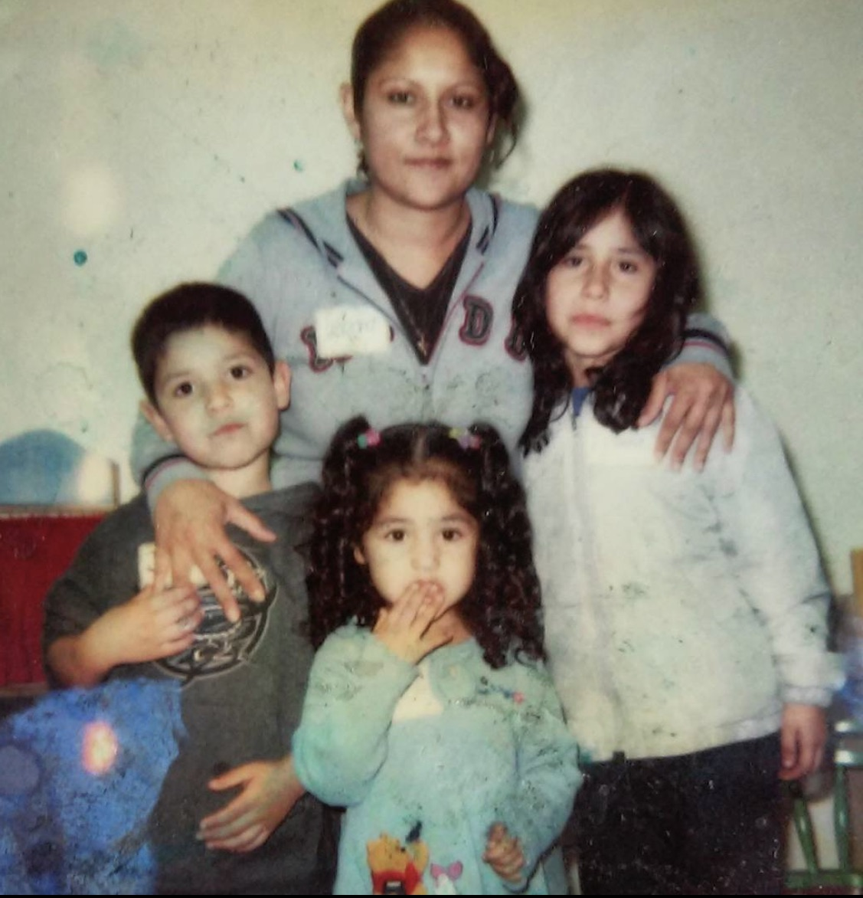
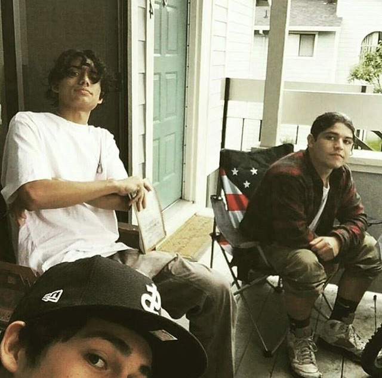
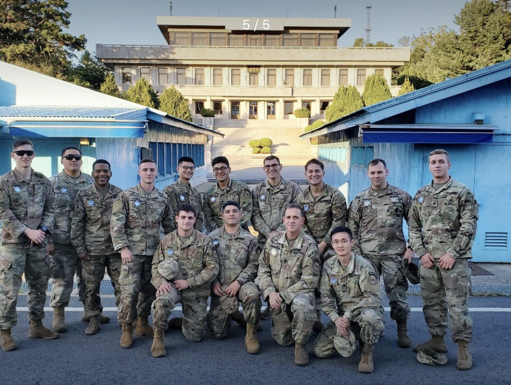

I grew up in San Jose, California with my mom and 2 sisters. We moved around a lot within the city so I'm familiar with most areas. Even though we moved around a lot I was lucky enough to eventually end up at the same middle school and high school that my childhood friends were at. I'm still very close with some of my childhood friends till this day. When I was about 10 my little brother Roman was born and I couldn't have been happier to finally have a brother.

After highschool I had worked various jobs ranging from fastfood to retail, aswell as some warehouse work. I don't have many pictures from back then but here is a picture with me and some friends hanging out when I was 18 years old. I attempted to go to college but after a semester I decided that I wasn't quite ready to commit to that journey and decided that I would take a little detour for a few years and join the U.S Army.

In January of 2019 I decided I would join the Army as an infantryman. Upon completion of training I attended Airborne school and earned the title of Airborne Infantryman. I've been lucky enough to be a part of a unit that I really enjoyed and made some long lasting relationships with. For the majority of my short lived military career I was stationed in South Korea with the UNCSB-JSA. It was definitely one of the most mind-broadening experiences I've had in my life and as well as one of the best experiences. The military overall has been a proud accomplishment of mine and has instilled self discipline, integrity, and many other characteristics into me.